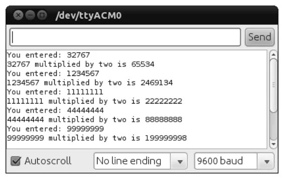

We’ll use the Serial Monitor to accept long variables and numbers larger than one digit. This sketch accepts a number of many digits, multiplies that number by 2, and then returns the result to the Serial Monitor.
// Project 14 - Using long Variables
long number = 0;
long a = 0;
void setup()
{
Serial.begin(9600);
}
void loop()
{
number = 0; // zero the incoming number ready for a new read
Serial.flush(); // clear any "junk" out of the serial buffer before waiting
while (Serial.available() == 0)
{
// do nothing until something comes into the serial buffer,
// when something does come in, Serial.available will return how many
// characters are waiting in the buffer to process
}
// one character of serial data is available, begin calculating
while (Serial.available() > 0)
{
// move any previous digit to the next column on the left;
// in other words, 1 becomes 10 while there is data in the buffer
number = number * 10;
// read the next number in the buffer and subtract the character 0
// from it to convert it to the actual integer number
a = Serial.read() - '0';
// add this value a into the accumulating number
number = number + a;
// allow a short delay for more serial data to come into Serial.available
delay(5);
}
Serial.print("You entered: ");
Serial.println(number);
Serial.print(number);
Serial.print(" multiplied by two is ");
number = number * 2;
Serial.println(number);
}In this example, two while loops allow the Arduino to accept multiple digits from the Serial Monitor. When the first digit is entered (the leftmost digit of the number entered), it is converted to a number and then added to the total variable number. If that’s the only digit, the sketch moves on. If another digit is entered (for example, the 2 in 42), then the total is multiplied by 10 to shift the first digit to the left, and then the new digit is added to the total. This cycle repeats until the rightmost digit has been added to the total.
Figure 5-6 shows the input and output of this sketch.
